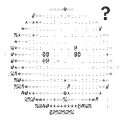

How Conscious works · 3 of 3
Your install, your keys, your yes
Conscious runs where you run it. Keys never pass through the chat or reach the model, and nothing that sends, books, pays or deletes runs without your yes.
The model you choose
Mistral, Claude, GPT, or a local one through Ollama.
It readsthe conversation, memory, tool results
It never getsa key, a token or a password
Your install
Your machine or your server. There is no Conscious server that sees any of it.
Conscious
- the orchestrator and every agent
- the broker, which adds a key to a request on its way out, only to the hosts you approved
- plugins, each call in a sandbox that reaches only the hosts it declared
.conscious/
vault.jsonkeys, sealed
reminders.jsonreminders, checks
background.jsonjobs in flight
pacing.jsonpause, today's count
vault.jsonkeys, sealed
reminders.jsonreminders, checks
background.jsonjobs in flight
pacing.jsonpause, today's count
Each person's computer
An E2B sandbox
memory/
agents/
skills/
files/
the conversation
agents/
skills/
files/
the conversation
It holds no keys and pauses when idle. Without one, all this lives in .conscious/.
A Chrome of its ownYou sign in through a live view. Buttons that pay or send are refused.
Every tool has an effect

readlook up, search, listrunsdraftprepare, nothing leavesrunscommitsend, book, pay, deleteneeds your yesApprovals in the chat come next. Until then, commits are blocked.
A key, from you to a service
1
Conscious texts you a private link: single use, 15 minutes.
2
You paste the key there, or sign in. Never in the chat.
3
It is checked, sealed and kept on your install.
4
Conscious adds it to each request, only to the hosts you approved.